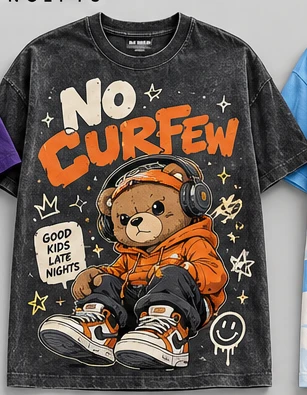

Three outfit formulas for a graphic T-shirt

Start with the graphic
A graphic T-shirt already gives an outfit a focal point. Before choosing trousers or a cap, pick one colour from the print. Repeat that colour once elsewhere, or use quiet colours around it. You do not need a new item for every outfit: start with what is already in your wardrobe.
Formula 1: the everyday class outfit
Pair your tee with straight-leg jeans or relaxed cargos and comfortable shoes. If the print has several colours, use plain trousers to leave the artwork visible. Check the outfit while sitting as well as standing: a long day in lectures is a better test of fit than a mirror pose. Carry only what you need and keep your phone and keys in a secure pocket.
Formula 2: a light layer
Wear an open overshirt over the tee when the weather is changeable. The centre of the print stays visible while the layer adds warmth. Try the combination using a shirt you already own before buying another. If both pieces are loose, check that the sleeves and hems do not bunch uncomfortably under your bag straps.
Formula 3: one colour connection
Use a cap or a pair of socks to repeat a small colour from the graphic. One connection is enough; matching every item can make an outfit feel too deliberate. For example, a green detail in a print works with a green cap and otherwise neutral clothing. Try different combinations in daylight because room lighting changes how colours appear.
Before ordering a tee
Compare garment measurements with a T-shirt you like wearing. Ask the seller for chest width and length rather than relying only on S, M or L. If the artwork is a concept image, request confirmation of its final size, position and colours. At NO CURFEW, graphic tees are R200; we confirm stock and product details before payment.
Have a product question? Ask The NO CURFEW team on WhatsApp.